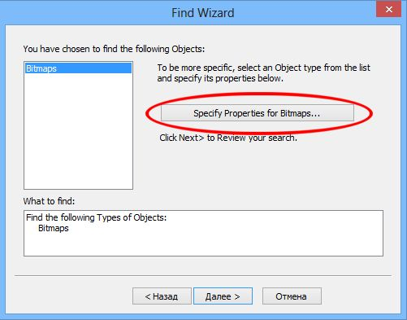

Корел ругается на изображение с 96 dpi. Как его найти это изображение?
snml / 13.04.2013, 15:35
Форум:
Версия программы:
16.0.0.707
Корел ругается на изображение с 96 dpi.
Как его найти это изображение?
Корел ругается на изображение с 96 dpi.
Как его найти это изображение?

Разрешение документа можно посмотреть в свойствах документа: Файл > Свойства документа. А что касается выбора типа растрового изображения, то после того, как Вы выбрали тип объектов (Bitmaps) на странице Мастера и нажали Далее, то на следующей странице Мастера надо нажать большущую кнопку:

Появится окошко, в котором надо установить флажок, чтобы получить доступ к списку типов растровых изображений:
Возможно, когда Вы конкретно укажите тип растрового изображения, Корел чего-нить и найдет. Но это надо только пробовать...
Но может случиться и такое, что Корел что-то по ошибке сообщил о низком разрешении...
спасибо, сделал все это.
разрешение документа стоит 300 dpi
поиском нашел все те же объекты, но только разнесенными по разным типам.
у меня вот мысль - а не может это какая-нибудь текстура быть? и как ее можно найти?
пробовал искать среди заливок, но там как-то не понятно, в каком месте смотреть разрешение заливки.
Страницы